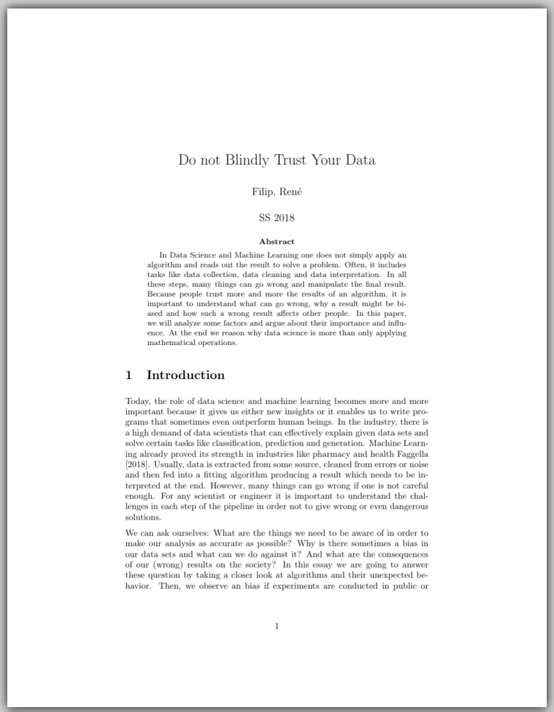

Do Not Blindly Trust Your Data Aug 1, 2018 During my Master, I took the class "Data Science Society" which is about the ethics on data science. For the final project of this class, every student had to write an essay on a related topic. This was my attempt.  Download Please enable JavaScript to view the comments